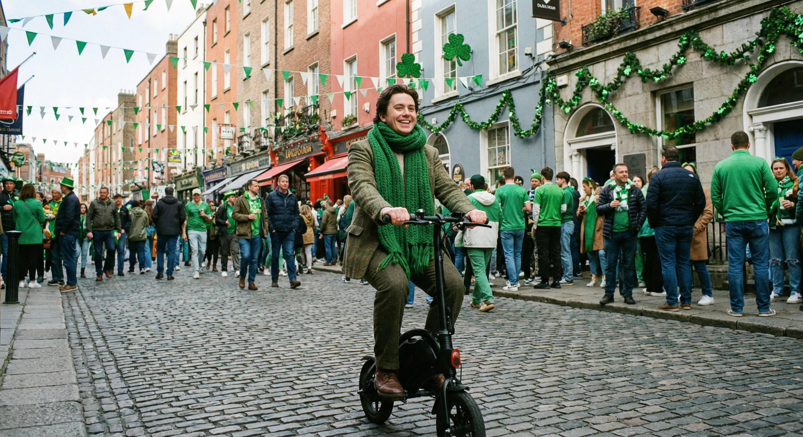

Nothing says “Happy Paddy’s Day” like a gift that’s green in every sense of the word. An electric scooter is eco-friendly, Irish-owned, and ready for spring.
See Our Top Picks

On St. Patrick’s Day, green isn’t just a colour — it’s a way of life. An electric scooter is the rare gift that’s both eco-friendly and genuinely exciting to unwrap.
Zero emissions, pennies to charge, and one less car clogging up the streets. It’s the kind of Irish pride you can ride every day, not just on the 17th of March.
Spring is in the air and the evenings are stretching. There’s no better time to hand someone the keys to effortless, emission-free travel across Ireland.


Green Wheels Scooters is a Dublin business through and through. When you buy from us, you’re supporting local jobs and keeping your money in the Irish economy.
We believe green transport shouldn’t be a luxury. Every scooter ships free across Ireland with a full warranty and the backing of our Dublin 7 service centre.
This St. Patrick’s Day, give a gift that celebrates what it means to be Irish — forward-thinking, community-minded, and just a little bit craic.
Three green machines for every budget. Each one ships free across Ireland with a full 1-year warranty from our Dublin team.


Dual Motor • 70km Range • Premium Power • Built for Ireland
Browse our full range or get in touch for personalised advice. We’ll help you find the perfect green machine.
Shop Now Contact Us